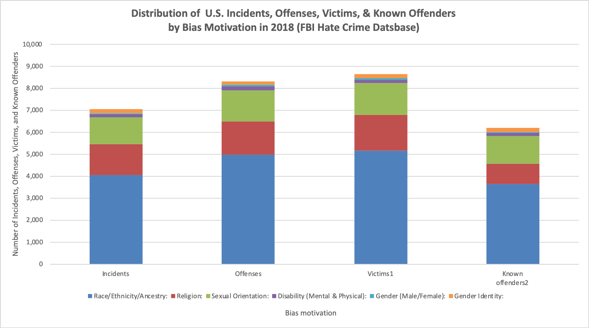

I was initially curious about the Digital Humanities project titled "Returning to Roots: History of Adobe Structures in San Antonio Texas” because I realized that I did not know exactly what adobe is or what it means to the culture and history of the Mexican-American region. Although the project is a single-page site with basic information, it is organized into a question and answer narrative that provides a basic description of adobe culture in San Antonio, Texas. The project displays secondary sources which include historical photographs, maps, and news paper clippings. Although the origins of all sources are not always clear, I can discern they include maps from The Sanborn Map Company and the University of Texas at Austin, pictures and references from the University of the Incarnate Word, and news clippings from local San Antonio publications including The Daily Express News and The San Antonio Ledger. The project features an interactive map of San Antonio showing where adobe buildings were once located and where some still remain as of 2019 using ArcGIS StoryMaps from a company called Esri (Environmental Systems Research Institute). Shine Trabucco, the author, most likely needed to transcribe the specific location of adobe structures given their research and geocode them into the ArcGIS tool using their online interface. Trabucco also incorporated some sort of slideshow that goes through a historical display containing a brief narrative along with a map and several pictures. Since there is not an “about” page, much of the sources, processed and presented layers are obscured. Overall the presentation in narrative or story telling form is a smooth and easy introduction for all types of audiences into adobe culture in San Antonio Texas. I especially think that the last question of the project, which asks why one should care about adobe, is the perfect question with which to end the narrative. Not only does it try to relate itself to readers, but potentially opens up the history of adobe to a pattern of cultural extinction that continues today within and without infrastructural/architectural city ordinances. However, Shine Trabucco could have made it a bit more explicit and warned the reader of how indigenous, native, or underrepresented cultures, like adobe culture, have been eradicated under a veil of public safety through city ordinances and laws. Furthermore, she could have urged us to keep an eye out for these sort of cultural threats.
I have done the following with OpenRefine:
Using a subset of the FBI Hate Crime database, I created the following stacked barchart showing hatecrime Incidents, Offenses, Victims, and Known Offenders by Bias Motivation for 2018. The Microsoft Excel data file can be downloaded here or seen in HTML format here
.
I started looking through the Gutenberg archive for books that I had read, but it was overwhelming to even begin to select five. I then chose the category of philosophy. I ultimately decided to choose five black American authors. It was much easier to find male authors such as W.E.B. Dubois, Booker T. Washington, and James Weldon Johnson. On the other hand, when I searched for Maya Angelou, Assata Shakur, and Audrey Lorde, I did not find any of their work. I did manage to find Ida B. Wells and discovered Elizabeth Keckley who was a former slave. For this assignment, I analyzed the following texts using Voyant after downloading them from Project Gutenberg and deleting their boilerplate licensing footer:
What was immediately noticeable across the five texts were references to gender and ethnicity. The word “man” was one of the most prominent terms showing up among the top 25 terms in the word cloud for all texts except Behind the Scenes. For that particular text the term “mrs” was the most prominent showing up 470 times, “mr” 262 times, and “man” 72 times. Below are the rest of the distributions of the terms “woman,” “women," “man,” and “men:"
An interpretation of these results at this surface level quickly reveal how male authors reference men much more often than women while the female authors’ texts have a slightly more equally balanced distribution. With that said, Behind the Scenes only contains the term “women” six times, which requires further analysis. This type of distant reading and analysis (word frequency and word count) leaves important context out of the analysis and should be corroborated with other techniques and/or methods entirely.
Next, I played around with the terms in the network “Links” pane by adding the terms “man” and “woman” to determine which other terms were most frequently associated with them. The results were interesting. For example, the following are the results for The Autobiography of an Ex-Colored Man embedded in as an iframe from Voyant:
To avoid an annoying repetition and prevent your browswer from overloading, I have summerized the results below in plain text:
This network analysis of associated or linked terms was also very interesting. Du Bois and Johnson associated the term woman with aesthetic or physical characteristics such as “beautiful” and “attractive,” while Wells-Barnett, Keckley, and Washington most associated the term with character, identity, and sociopolitical and natural condition. A different alignment was found regarding the term “man.” Du Bois and Johnson shared the term “said” and associate the term with characteristics as well as power exemplified with the terms “master,” and “said.” Both of the terms give voice and the power of influence to “man.” Washington also associated the term “man” with power through the terms “white” and “believe." Wells-Barnett associated “man” with conceptually the ultimate power with terms such as “god” and “country.” Additionally, Wells-Barnett and Keckley also associated the term “man" with a female counterpart exemplified in terms like “girl” and “wife.” Again, the male authors tend to talk about themselves while female authors also speak of males in relation to themselves.
There is plenty missing from this analysis to further contextualize gender differences, inequalities, and their subsequent transgressions in literary texts. One could not, for example, identify feminist writers by simply quantifying the times “woman” appears in a text. However, as far as distant reading goes, it is an excellent way to start and/or end when analyzing corpora in relation to these types of topics. It is a good point of exploration that can lead to a closer reading, or an excellent punctuation to finish a close analysis of such interpretations. Either one can be a part of the triangulation process when used with other methods in research (Baker and Levon 2015).
Milestone homework: finished site can be found here.
The following is a map of the cities within California that have agencies that self-report hate crimes to the FBI. The tooltip displays the city name and population size. The cities names were downloaded from the FBI Hate Crime Statistics and geocoded using CartoDB. The CartoDB file can be accessed directly here.